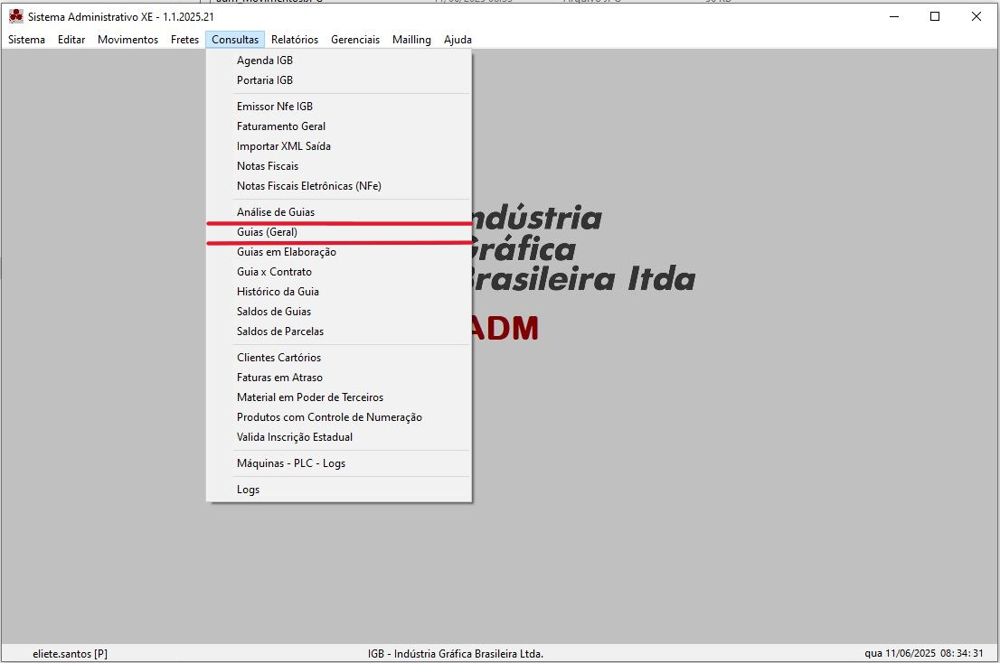
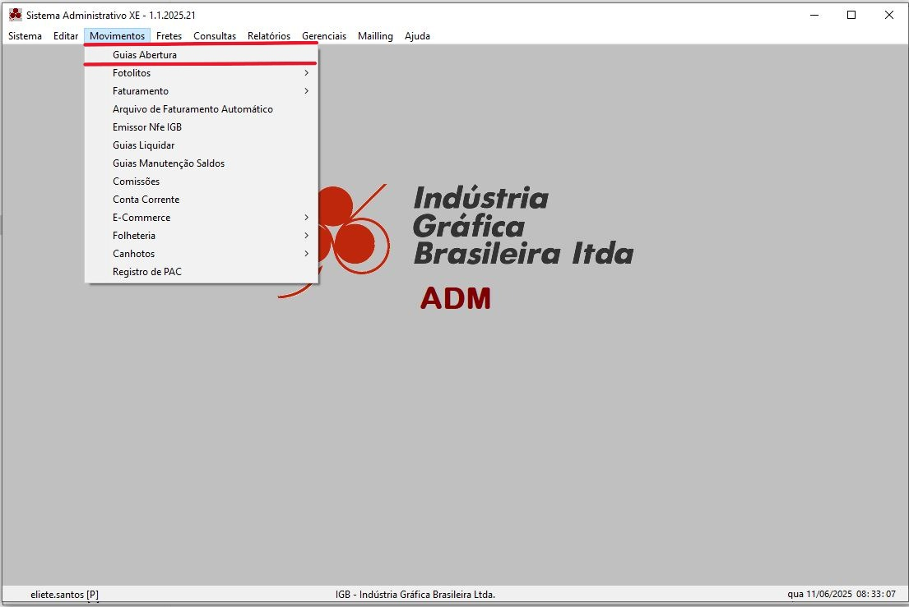
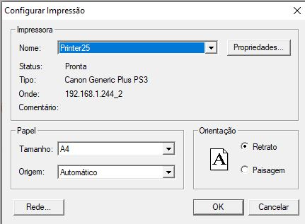

Guias
O Cadastro de Grupo de Materiais tem por finalidade armazenar os Grupos de Materiais diversos pré-definidos
para posterior agregação dos Materias.
Estas informações estão distribuidas em uma tela no formato de páginas, onde cada página traz um tipo especifico
de informação.
Dica:
Novo Conceito de Guia
Como já sabemos para todo pedido é aberto uma nova Guia na qual devemos especificar todas as
informações necessárias para os diversos departamentos da empresa.
A Primeira Parte da Guia (Guia Principal) contem informações sobre o representante, cliente, pedido
e parcelas do pedido.
Enquanto que a segunda parte, contem as informações sobre as Ordens de Serviços (OS).
Consultando uma Guia
Estando com a Guia gerada (esteja ela aberta por inteira ou parcialmente).
Necessitamos consultar ou alterar informações sobre a mesma.

Para isto, não precisamos seguir uma sequencia lógica das páginas, como na abertura da Guia, podemos selecionar a página desejada e alterar as informações da mesma, sempre lembrando que toda alteração precisa ser confirmada (gravada).
Consultando as páginas de:
Abrindo uma Nova Guia
No menu principal

Na página de Pesquisa
1º - Clique no botão abrir Nova guia
Na página de Clientes
2º - Preencha os campos do Cliente e grave as informações
3º - Preencha os campos do representantes e grave as informações.
Na página de Pedidos
4º - Preencha os campos do Pedidos/CFO e grave as informações
5º - Preencha os campos Parcelas e grave as informações
Na página de OS / A
6º - Preencha os campos da OS / A e grave as informações
Na página da OS / B
7º - Preencha os campos da OS / B e grave as informações
Na página de Tintas
8º - Preencha os campos das tintas e grave as informações
Na página de Máquinas
9º - Preencha os campos das Máquinas e grave as informações
Na página de Papéis
10º - Preenha os campos dos Papéis e grave as informações
Na página de Carbono (se houver)
11º - Preecha os campos dos Carbonos e grave as informações
Na página Extra
12º - Preencha os campos de Extras e grave as informações
Na página de Etapas
13º - Preencha os campos das Etapas e grave as informações
Impressão da Guia
A GUIA pode ser impressa a qualquer momento e qualquer parte que desejar, não sendo obrigatório
a imprimí-la por inteira. Ao ativar a tela para impressão de Guia é sugerido a última Guia que foi aberta.
Para imprimir outra, apague o número sugerido e digite o outro, caso não conheça o número, deixe esse campo em branco, que ao sair do mesmo será aberto
uma caixa de listagem com as Guias que já foram abertas.

Menu Principal